Callrecorder 0.24.0 · 8 novembre 2026 · regard d'un designer UX macOS
Ce que j'ai regardé. Les 35 captures de la version publiée (corpus fictif, dans captures-mac-0.24.0/), puis, pour tout ce qu'elles ne montrent pas, les vues de Sources/CallRecorder : la barre des menus et son panneau (App.swift, RecordingsPanel.swift), la pastille (Pastille.swift), les menus et leurs raccourcis (MainMenu.swift), les notifications (Recorded.swift, WeeklyAccess.swift), les états vides et les alertes (EmptyCalls.swift, Accessibility.swift), les Réglages (Onboarding.swift, Wizard.swift) et les libellés VoiceOver. J'ai relu avant DESIGN.md, TEXTES.md, MANIFESTE.md, UI-MANQUANTE.md et INCOHERENCES.md, et cherché l'origine de chaque texte que je propose de changer (git log -S).
Comment. Écran par écran, contrôle par contrôle, avec trois questions : comprend-on ce qu'on voit (sens) ? un habitué du Mac le reconnaît-il, d'après les Human Interface Guidelines et les apps d'Apple, Notes, Mail, Dictaphone, Réglages Système (familiarité) ? est-ce que ça sert à ce que ça doit faire (fonction) ? Je n'ai pas touché aux parcours ni aux fonctions. Quand une proposition va contre un choix fait exprès, le commit est cité.
Limites. Les captures sont prises fenêtre inactive : les titres gris et les interrupteurs gris en viennent, je ne les compte pas comme défauts. Les captures hors écran n'affichent pas tout (le direct d'un enregistrement, la pastille, les menus) : là, je lis le code. Les deux lignes « Paul Mercier » en double viennent du corpus.
Gravité : Gêne on se trompe, on hésite ou on cherche ; Détail ça se remarque, sans bloquer. Effort : minutes (un texte, un raccourci) ou heures (une vue à reprendre).
« Aucune conversation sélectionnée » et « Aucune conversation encore » portent l'icône phone.
Pourquoi
DESIGN.md et TEXTES.md séparent « appel » (un vrai appel) et « conversation » (appels, réunions, notes). Le combiné dit « appel » à l'endroit même où le texte dit « conversation » ; une réunion en salle ou une note dictée n'est pas un appel. L'image arrive avant le mot, et c'est elle qu'on retient.
Proposition
Prendre le signe de l'app plutôt que celui d'un type : waveform, déjà l'icône de la barre des menus au repos. Le même pour les trois variantes (sélection vide, liste vide, Terminal).
Avant
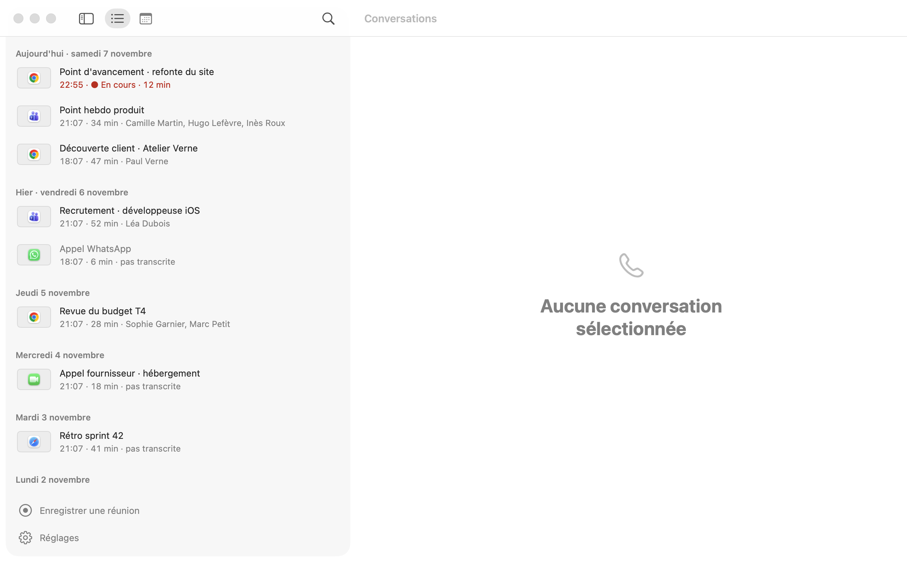
Après
Aucune conversation sélectionnée
L'onde de l'icône de la barre des menus : le même signe partout pour « une conversation ».
2
« Rien n'a été enregistré » est dit deux fois sur le même écran
GêneMinutesSens
Où
captures-mac-0.24.0/transcrire.webp · TranscriptReader.swift:1072 (bandeau) et :1441 (centre)
Vu
Un bandeau rose « Le micro n'a rien enregistré. », et au centre « Rien n'a été enregistré : aucun son n'est arrivé. ». Deux phrases, deux tons, deux sujets (le micro, puis rien du tout) pour un seul fait. Et aucun geste : ni « Supprimer », ni « Pourquoi ? ».
Pourquoi
« On ne dit pas deux fois la même chose dans une vue » (TEXTES.md, principe 1). Pire : les deux ne disent pas exactement la même chose, on se demande si le son des apps, lui, a marché. Sur la capture voisine rien.webp, le même cas a un état vide propre, avec un bouton.
Proposition
Un seul état vide, celui de rien.webp : icône mic.slash, titre « Rien d'enregistré », la phrase de cause en dessous (celle qui dit ce qui manquait, micro ou son des apps), et le bouton « Supprimer la conversation ». Le bandeau ne sert que quand il y a aussi du texte (une piste muette sur deux).
Avant
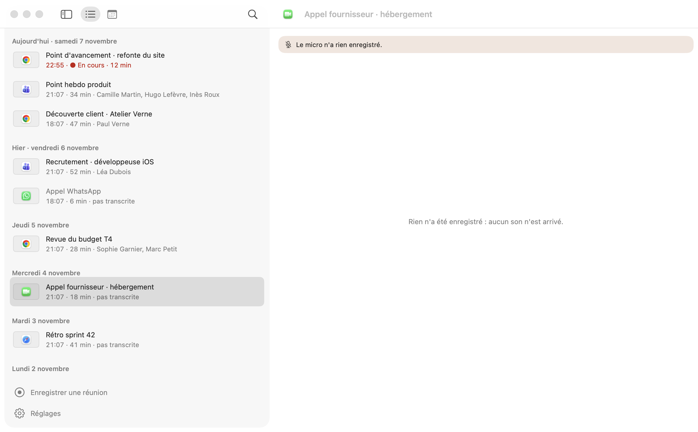
Après
Rien d'enregistré
Aucun son n'est arrivé, ni du micro ni des apps.
Supprimer la conversation
3
« Rien à lire » : un bouton « Supprimer » sans objet
« L'enregistrement est à la corbeille et n'a pas été transcrit. » puis un bouton « Supprimer ». Juste après une phrase qui parle de l'enregistrement, « Supprimer » se lit « supprimer l'enregistrement », qui est déjà à la corbeille.
Pourquoi
« Bouton : un verbe à l'infinitif et son objet » (TEXTES.md). Le clic droit dit déjà « Supprimer l'appel » (CallsModel.deleteLabel) : le bouton doit dire pareil.
Proposition
model.deleteLabel([m]) comme libellé : « Supprimer l'appel », « Supprimer la réunion »… Et l'icône waveform.slash peut rester.
Avant
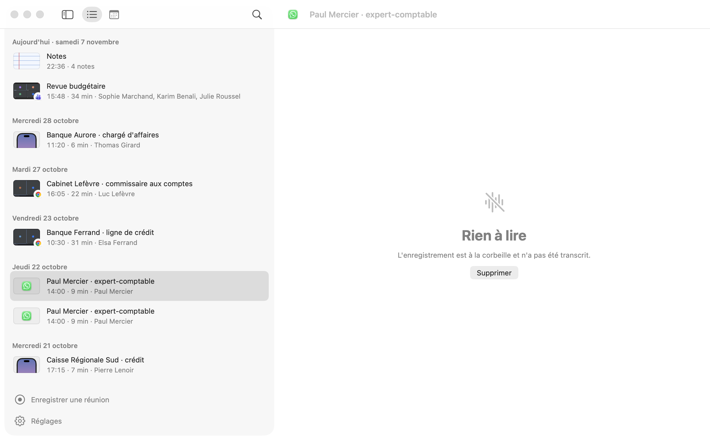
Après
Rien à lire
L'enregistrement est à la corbeille et n'a pas été transcrit.
Supprimer l'appel
4
« pas transcrite » sous un titre masculin, et une aide qui donne un chemin
DétailMinutesSens
Où
vide.webp (« Appel WhatsApp · 18:07 · 6 min · pas transcrite ») · CallCard.swift:228-231, :222
Vu
L'accord se fait avec « conversation », qu'on ne lit nulle part ; on lit « Appel … pas transcrite ». L'infobulle ajoute « Pour la transcrire : l'ouvrir, puis menu Conversation › Transcrire. » ; une autre « Pour la garder ici : clic droit, puis Garder dans la liste. ».
Pourquoi
La faute d'accord apparente fait douter du reste. Une infobulle qui dicte un chemin de menu avoue que le geste n'est pas là où on l'attend (TEXTES.md, principe 2). Or le bouton « Transcrire » existe déjà dans la conversation ouverte.
Proposition
« à transcrire », sans genre, et qui dit ce qui reste à faire. Infobulle réduite à la conséquence : « L'audio part à la corbeille dans 2 jours ». Le chemin se retire.
Avant
✆
Appel WhatsApp
18:07 · 6 min · pas transcrite
Infobulle : Pas transcrite. Pour la transcrire : l'ouvrir, puis menu Conversation › Transcrire.
Après
✆
Appel WhatsApp
18:07 · 6 min · à transcrire
Infobulle : L'audio part à la corbeille dans 2 jours
5
Une vignette sans capture ressemble à une image qui n'a pas chargé
DétailMinutesSens
Où
vide.webp, groupes.webp · KindThumb.swift, Thumb.fill dans Style.swift
Vu
Sans capture, un logo de 14 pt au centre d'un cadre gris de 48×30 avec liseré. Dans lecture.webp, les lignes avec capture mettent le logo en badge dans le coin : deux grammaires dans la même liste.
Pourquoi
Un cadre gris avec un petit pictogramme au milieu est le signe universel du « fichier sans aperçu » (Finder, Photos). Le liseré, justifié pour une capture claire (DESIGN.md), n'a rien à border ici.
Proposition
Sans capture, pas de cadre : le logo de l'app à 24 pt, centré dans la colonne de 48. Avec capture, rien ne change. La colonne garde sa largeur, les titres restent alignés.
AvantAprès
Point d'avancement · refonte du site
22:55 · ● En cours · 12 min
T
Point hebdo produit
21:07 · 34 min · Camille Martin, Hugo Lefèvre
Va contre une valeur notée : Thumb.fill « Vignette sans capture » dans DESIGN.md. La proposition garde la valeur pour les vignettes de la bande des captures, et la retire seulement de la ligne de liste.
6
Le calendrier se lit à rebours, sous une ligne de jours détachée des mois
Novembre est au-dessus d'octobre ; « L M M J V S D » reste figé en haut, au-dessus des deux mois. Les jours avec conversations sont en gras avec des points, le reste en gris : à 11 px, le gras se voit mal, les points font le travail.
Pourquoi
Partout sur le Mac (Calendrier en vue Année, le mini-calendrier de Calendrier, Photos par jours), le temps descend : octobre puis novembre, aujourd'hui en bas ou sous des flèches. L'œil cherche la semaine suivante en dessous. Ici, la liste et le calendrier partagent un ordre, c'est sans doute voulu : mais une grille de jours n'est pas une liste.
Proposition
Ordre chronologique, ouvert défilé jusqu'au mois courant en bas ; l'en-tête des jours répété sous chaque nom de mois. Les jours sans conversation en .tertiary, ceux qui en ont en .primary, sans gras : les points suffisent.
Avant
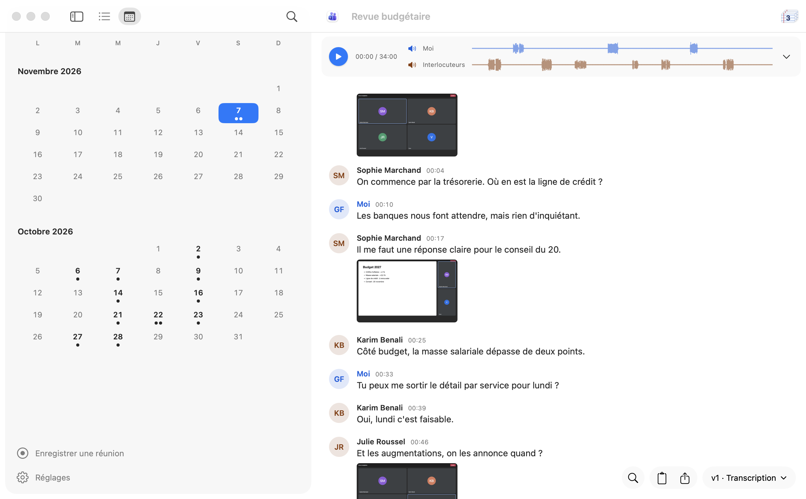
Après
Octobre 2026
LMMJVSD12•34…
Novembre 2026
LMMJVSD1234567••8
7
Notes : un bouton « + » flottant, idiome Android
DétailMinutesFamiliarité
Où
captures-mac-0.24.0/notes.webp (en bas à droite) · NotesPane.swift:386-420
Vu
Un rond de 46 pt avec « + » flotte dans le coin. Sur chaque carte, l'heure de la prise de note (« 22:36 ») est en gras, le passage cité vient après, et l'heure dans l'appel (« 00:08 ») tout en bas : deux heures de nature différente sur la même carte.
Pourquoi
Le bouton d'action flottant vient de Material Design. Sur le Mac, Notes et Dictaphone posent « Nouvelle note » / « Nouvel enregistrement » dans la barre d'outils et sous ⌘N. Sur la carte, ce qu'on cherche d'abord est ce qui a été dit, puis d'où ça vient : l'heure de prise de note est la moins utile des trois.
Proposition
« Nouvelle note » dans la barre d'outils, à droite (square.and.pencil, comme Notes), avec ⌘N (voir 14). Sur la carte : la citation en premier, puis « Revue budgétaire · Karim Benali · 00:25 », l'heure de prise en .caption à droite.
Avant
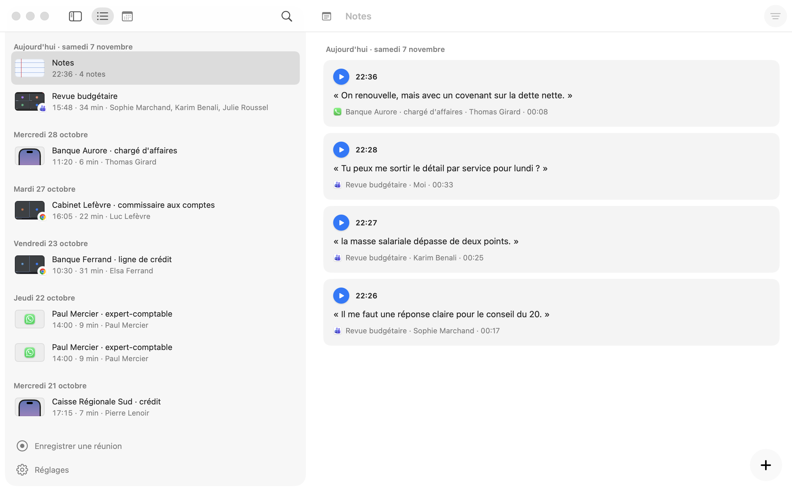
Après
Notes⏷✎
▶
« la masse salariale dépasse de deux points. »
Revue budgétaire · Karim Benali · 00:25
22:27
8
Visionneuse des captures : trois vignettes marquées « 15:48 »
Chaque vignette porte l'heure de l'horloge (« 15:48 »), la même pour les trois, prises dans la même minute. Sous la grande image, la réplique porte l'heure dans l'appel (« 00:03 »).
Pourquoi
Une étiquette identique sur toutes les vignettes ne distingue rien. Et deux échelles de temps dans la même vue (horloge en haut, position dans l'appel en bas) obligent à convertir.
Proposition
La position dans l'appel partout dans la visionneuse : « 00:03 », « 00:17 », « 00:37 » sur les vignettes ; sous-titre « Capture 1 sur 3 · 00:03 ». L'heure de l'horloge reste dans le titre de la conversation.
Avant
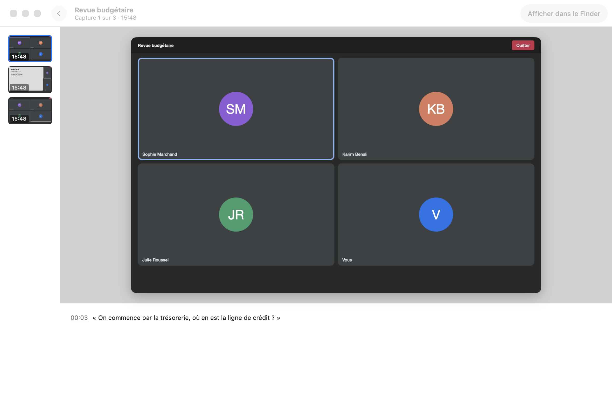
Après
Revue budgétaire
Capture 1 sur 3 · 00:03
00:03
00:17
00:37
Lecture d'une conversation
9
« v1 · Transcription » : la version montrée au premier niveau
GêneMinutesSens
Où
lecture.webp, nouvelle.webp, fenetre-transcription.webp (pastille en bas à droite) · TranscriptReader.swift:596-606, :655-659
Vu
Sur chaque conversation, le bouton le plus large de la barre flottante dit « v1 · Transcription » ou « v2 · Transcription ». Après une nouvelle transcription moins bonne (nouvelle.webp : « L'album attendre mais réalisons »), c'est elle qu'on lit, avec « v2 » comme seul indice.
Pourquoi
« Montrer le final, garder le reste sur le disque. Une seule transcription affichée, jamais la liste des versions » (DESIGN.md). « v1 » est un mot du code : la personne ne sait pas ce qu'est une v1, ni s'il en existe d'autres, ni laquelle est la bonne. Dans la dev, l'interrupteur callFacts remplace déjà ce bouton par « Détail » (⌘I) : la prod garde l'ancien.
Proposition
En prod tout de suite : le bouton dit ce qu'est le texte, sans numéro : « Transcription », « Relue par Claude », « Modifiée ». Le numéro n'existe que dans le menu, à côté de la date. Ensuite, sortir callFacts de son interrupteur (voir ESSAIS.md) : « Détail » remplace le menu.
Avant
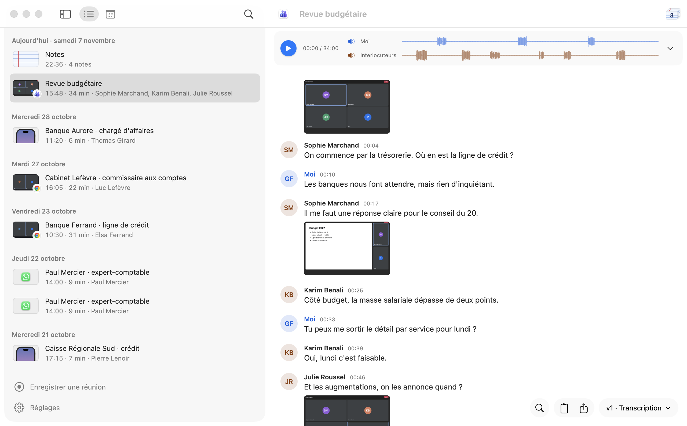
Après
⌕⧉ ⇪Relue par Claude ⌄
Relue par Claude aujourd'hui 15:52
Transcription aujourd'hui 15:49
Afficher le contexte
Nouvelle transcription
Relire avec Claude
Le numéro disparaît ; la date distingue deux versions du même genre.
Le libellé « vN · genre » date de e623f52 (27 octobre, 0.6.0) ; 35b9624 (5 novembre) a commencé à le retirer derrière callFacts. La proposition va dans le sens de ce second commit.
10
Pendant l'enregistrement, le squelette dit « en cours de transcription »
GêneHeuresSens
Où
enregistrement.webp comparé à encours.webp · TranscriptReader.swift:1806-1808
Vu
Un appel qui s'enregistre et une nouvelle transcription qui tourne affichent le même squelette gris. Sur la capture, la carte du haut est réduite à « 12:02 Enregistrement en cours » (le direct n'est pas photographié) ; dans l'app, elle porte les jauges et « Arrêter ».
Pourquoi
Un squelette promet un contenu qui arrive. Pendant un appel sans transcription en direct, rien n'arrivera avant la fin : la personne attend, regarde, croit à une panne. Les deux états n'ont pas le même avenir, ils ne doivent pas avoir la même image.
Proposition
Pendant l'enregistrement, tant qu'aucune phrase n'est reconnue : un état vide calme, « La transcription commence à la fin de l'appel. » (ou, si le direct est actif, « Les paroles s'affichent ici. »). Le squelette reste réservé à « Transcription en cours ».
Avant
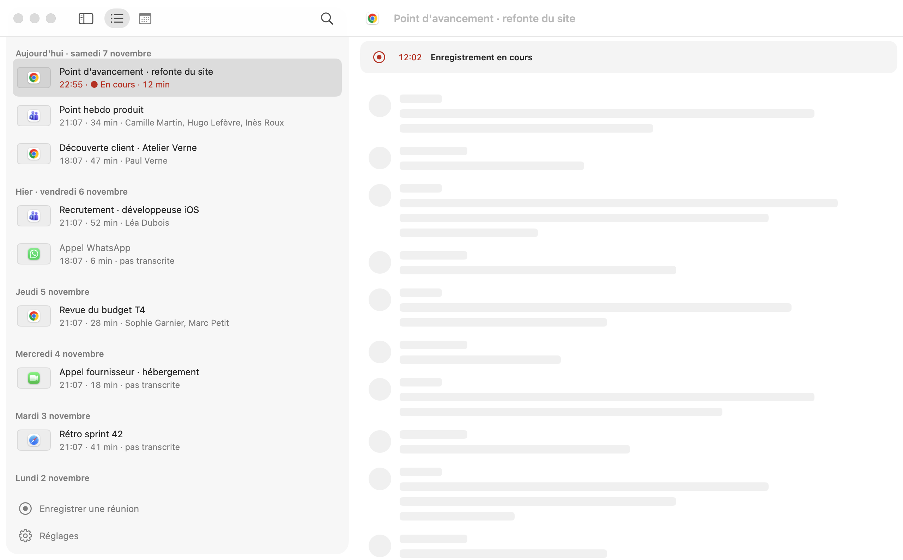
Après
12:02
Micro
Chrome
Arrêter l'enregistrement
La transcription commence à la fin de l'appel.
11
Lecteur : les haut-parleurs sont des boutons, rien ne le dit
DétailMinutesSens
Où
lecture.webp (lecteur en haut) · TranscriptReader.swift:531-547
Vu
Devant « Moi » et « Interlocuteurs », une icône speaker.wave.2.fill colorée. C'est un bouton qui coupe la piste ; il a l'air d'un indicateur de volume. Le compteur « 00:00 / 34:00 » met un zéro de tête que QuickTime et Dictaphone n'affichent pas.
Pourquoi
Couper une piste est rare mais précieux (réentendre une seule voix). Une icône sans fond ni survol visible ne se découvre pas. Et la cible, une icône de 12 pt, est petite.
Proposition
Le nom de piste et son icône forment un seul bouton (cible 24 pt de haut, survol Hover.fill), barré et estompé quand il est coupé, avec l'infobulle déjà écrite (« Couper Moi à l'écoute »). Compteur « 0:00 / 34:00 ».
AvantAprès
▶0:00 / 34:00
🔊 Moi
🔇 Interlocuteurs
Survol : un fond. Coupée : barrée, l'onde s'efface, comme aujourd'hui.
12
La pile de notes, en haut à droite, ressemble à une date
DétailMinutesSens
Où
lecture.webp, repliee.webp (coin haut droit) · TranscriptReader.swift:560-568
Vu
Une petite feuille lignée avec « 3 » dessus. À cette taille, on lit une icône de Calendrier (un jour, le 3).
Pourquoi
C'est le seul passage vers les notes tirées de la conversation. Un dessin propre à l'app qui en rappelle une d'Apple induit en erreur ; le chiffre sur la feuille est justement ce que fait l'icône Calendrier.
Proposition
Le symbole des notes de l'app (note.text, déjà le logo de la page Notes d'après INCOHERENCES.md, 4.10) avec le nombre à côté : « 3 » en .caption, dans une capsule comme les boutons voisins. Libellé VoiceOver inchangé.
AvantAprès▤ 3
Infobulle : « Notes tirées de cette conversation ».
13
« Arrêter » a trois noms selon l'endroit
DétailMinutesFamiliarité
Où
Carte de l'appel en cours : « Arrêter » (TranscriptReader.swift:1800) · menu de l'icône : « Arrêter » (App.swift:861) · colonne et pastille : « Arrêter l'enregistrement » (RecordingsPanel.swift:20, App.swift:904) · infobulle : « Arrêter la réunion »
Vu
Une même action, quatre formulations.
Pourquoi
« Un mot, un sens, partout » (TEXTES.md, principe 8). Sur le Mac, QuickTime et Dictaphone disent « Arrêter l'enregistrement » ; c'est aussi ce que VoiceOver lit.
Proposition
« Arrêter l'enregistrement » partout où il y a la place ; « Terminer la note » reste pour une note. L'infobulle peut nommer l'objet : « Arrêter l'enregistrement de l'appel Teams ».
Avant
Enregistrement de Teams — 12:02
Arrêter
Capturer l'appel fn S
Arrêtercarte en cours
Après
Enregistrement de Teams — 12:02
Arrêter l'enregistrement
Capturer l'appel fn S
Arrêter l'enregistrementcarte en cours
Menus et clavier
14
Pas de ⌘N : le menu Fichier ne sait rien créer
GêneMinutesFamiliarité
Où
MainMenu.swift:35-46 (Fichier) ; l'action n'existe que dans la colonne et le menu de l'icône (RecordingsPanel.swift:31, App.swift:874)
Vu
Fichier contient « Ouvrir dans une nouvelle fenêtre », « Afficher dans le Finder », « Exporter la transcription », « Fermer ». Ni « Enregistrer une réunion », ni « Nouvelle note », ni « Arrêter l'enregistrement ». ⌘N ne fait rien.
Pourquoi
Toute app Mac qui crée quelque chose le met en tête de Fichier avec ⌘N : Dictaphone (« Nouvel enregistrement »), Notes, Mail, TextEdit. C'est le premier réflexe clavier. L'action principale de l'app n'a aujourd'hui aucun raccourci dans la fenêtre, et fn D n'est connu que de ceux qui ont lu les Réglages.
Proposition
En tête de Fichier : « Enregistrer une réunion » ⌘N (devient « Arrêter l'enregistrement » ⌘N pendant un enregistrement, comme Dictaphone), « Nouvelle note » ⇧⌘N (fn D rappelé à droite si activé), puis le reste. Le menu de l'icône de la barre des menus montre les mêmes raccourcis.
« Rechercher » est dans Présentation, pas dans Édition
DétailMinutesFamiliarité
Où
MainMenu.swift:78-92
Vu
Rechercher ⌘F, Rechercher dans la transcription ⌥⌘F, Occurrence suivante ⌘G et précédente ⇧⌘G sont dans Présentation, au milieu de Liste, Calendrier, Afficher le contexte et la barre latérale.
Pourquoi
Dans toutes les apps d'Apple, la recherche vit dans Édition › Rechercher, un sous-menu (Mail, Notes, Safari, Pages). C'est là qu'un habitué la cherche, et là que le champ de recherche du menu Aide la trouve sous son nom attendu. Les raccourcis, eux, sont déjà les bons.
Proposition
Édition › Rechercher › Rechercher dans les conversations ⌘F, Rechercher dans la transcription ⌥⌘F, Rechercher le suivant ⌘G, Rechercher le précédent ⇧⌘G (les libellés d'Apple). Présentation garde la mise en forme : Liste, Calendrier, contexte, barre latérale, plein écran.
Avant
Présentation
Liste ⌘1
Calendrier ⌘2
Rechercher ⌘F
Rechercher dans la transcription ⌥⌘F
Occurrence suivante ⌘G
Occurrence précédente ⇧⌘G
Afficher le contexte
Après
Édition
Copier la transcription ⇧⌘C
Supprimer l'appel ⌘⌫
Rechercher
Rechercher dans les conversations ⌘F
Rechercher dans la transcription ⌥⌘F
Rechercher le suivant ⌘G
Rechercher le précédent ⇧⌘G
16
Rouvrir la fenêtre principale : ⌘L au lieu de ⌘0
DétailMinutesFamiliarité
Où
MainMenu.swift:150 (Fenêtre › Conversations ⌘L) et App.swift:878
Vu
La fenêtre Conversations se rouvre par ⌘L.
Pourquoi
Les apps d'Apple à une fenêtre principale la rouvrent par ⌘0 dans le menu Fenêtre : Mail (« Visualiseur de messages »), Messages, Calendrier. ⌘L, partout ailleurs, veut dire « aller à l'adresse » ou « aller à la ligne ».
Proposition
Fenêtre › Conversations ⌘0, dans la fenêtre comme dans le menu de l'icône. ⌘L libre.
Le raccourci vient de b56f9b6 (4 novembre), qui renomme la fenêtre « Appels » en « Conversations » ; le commit ne dit rien du choix de ⌘L. Si ⌘L a été choisi exprès, garder les deux un temps.
Avant
Réduire ⌘M
Zoom
Conversations ⌘L
Après
Réduire ⌘M
Zoom
Conversations ⌘0
17
Pas de menu Aide, et le nom de l'app s'écrit « CallRecorder » dans les menus
DétailMinutesFamiliarité
Où
MainMenu.swift:22-32, :143-152
Vu
La barre des menus s'arrête à Fenêtre. « À propos de CallRecorder », « Masquer CallRecorder », « Quitter CallRecorder ».
Pourquoi
Le menu Aide est le dernier de toute app Mac. Même vide, il porte le champ de recherche de macOS, qui retrouve n'importe quelle commande par son nom et la montre dans son menu : c'est le plus grand service rendu à qui ne connaît pas encore l'app. DESIGN.md veut « Callrecorder » dans le texte ; les menus sont du texte (le nom du bundle peut rester).
Proposition
Aide › Aide de Callrecorder (ouvre les guides du site), Signaler un problème. Assigner NSApp.helpMenu pour avoir le champ de recherche. « Callrecorder » dans les intitulés.
« Annuler supprimer la conversation » : l'intitulé d'annulation se lit mal
DétailMinutesFamiliarité
Où
MainMenu.swift:176-180 (titled)
Vu
Le verbe d'annulation et le nom de l'action sont collés, l'action passée en minuscule : « Annuler supprimer la conversation », « Rétablir ranger la conversation ».
Pourquoi
macOS en français écrit « Annuler Supprimer », « Annuler Saisie » : l'action garde sa majuscule et se lit comme un nom propre de commande. Deux infinitifs à la suite en minuscules se lisent comme une faute.
Proposition
Garder la majuscule de l'action (« Annuler Supprimer la conversation »), ou donner aux actions un nom (« Annuler la suppression », « Annuler le rangement »), comme le fait Finder (« Annuler le déplacement »).
Avant
Annuler supprimer la conversation⌘Z
Rétablir ⇧⌘Z
Après
Annuler la suppression ⌘Z
Rétablir ⇧⌘Z
Barre des menus et pastille
19
Supprimer un appel en cours, depuis la barre des menus, sans filet
GêneHeuresFonction
Où
App.swift:868-871 et :787-796 (deleteClicked)
Vu
Pendant un enregistrement, le menu de l'icône propose « Supprimer cet appel » deux lignes sous « Arrêter », séparé par un trait. Un clic arrête et met à la corbeille, sans confirmation. Le commentaire dit « ⌘Z le remet » : mais l'app est en arrière-plan quand on passe par la barre des menus (on est dans Teams), ⌘Z va à Teams.
Pourquoi
Les HIG demandent une confirmation pour une action destructrice qui ne s'annule pas là où on la fait. Ici, ni l'un ni l'autre. La conversation reste dans Réglages › Récemment supprimés, mais qui le sait au moment où ça arrive ? Et la ligne visée est à 40 pt d'« Arrêter » dans un menu qu'on ouvre à la hâte.
Proposition
Garder la commande, ajouter le filet là où on est : une notification « Appel supprimé » avec le bouton « Remettre », qui fait ce que fait ⌘Z. Pas d'alerte (elle volerait le premier plan à l'appel en cours, ce que la pastille évite exprès, #79).
Avant
Enregistrement de Teams — 12:02
Arrêter
Capturer l'appel fn S
Supprimer cet appel
→ plus rien. ⌘Z part à l'app au premier plan.
Après
≋
Appel supprimé
Point hebdo produit · 12 min
Remettre
Même identifiant de notification que la fin d'appel : elle la remplace.
Clic : le panneau des conversations. Clic droit ou ⌃-clic : le menu, avec Quitter, la version et les mises à jour. Rien dans le panneau n'indique qu'un autre menu existe. L'app est en .accessory : pas d'icône dans le Dock, donc pas de « Quitter » par là non plus.
Pourquoi
Les icônes d'Apple ouvrent un seul menu au clic (Wi-Fi, Son, Batterie). Une app sans Dock dont le menu est caché derrière un clic droit se quitte par le Moniteur d'activité. Les tiers qui ouvrent un panneau (Fantastical, Dropbox) y posent un bouton ⋯ avec Réglages et Quitter.
Proposition
Dans le pied du panneau, à droite de « Réglages », un bouton ⋯ qui ouvre exactement le menu du clic droit. Le clic droit reste.
Avant
◉Enregistrer une réunion
⚙︎Réglages
Après
◉Enregistrer une réunion
⚙︎Réglages⋯
Rechercher une mise à jour
Version 0.24.0
Quitter Callrecorder ⌘Q
21
La pastille ne dit pas ce qu'elle enregistre, et n'a pas de clic droit
DétailHeuresFonction
Où
Pastille.swift:69-91, :164-180 (point rouge et chrono)
Vu
Point rouge, chrono, Capturer, Arrêter. Le point et le chrono n'ont pas de libellé ; le panneau n'a pas de titre. Rien ne dit si c'est Teams ou la réunion en salle qui s'enregistre. Pour la masquer, il faut aller dans Réglages › Paramètres.
Pourquoi
Sur un Mac qui a deux visios ouvertes, « qu'est-ce qui s'enregistre ? » est la question de la pastille. Tout objet flottant de macOS (le témoin de partage d'écran, l'image dans l'image) a un clic droit ou un survol qui en dit plus.
Proposition
Infobulle sur le chrono : « Enregistrement de Teams depuis 22:55 ». Clic droit sur le fond : « Ouvrir la conversation », « Masquer la pastille » (le même réglage que dans les Réglages), sans prendre le premier plan. Libellé VoiceOver du panneau : « Callrecorder, enregistrement de Teams, 12 minutes » (voir 33).
Avant
12:02⌖◼︎
Après
12:02⌖◼︎
Survol : « Enregistrement de Teams depuis 22:55 »
Ouvrir la conversation
Masquer la pastille
Notifications
22
La notification de la semaine pose une question sans boutons
Titre « CallRecorder », texte « macOS peut redemander l'accès à l'écran. Vérifier maintenant plutôt qu'en plein appel ? ». Pas d'action : cliquer vaut oui, ignorer vaut non, ce que rien n'indique.
Pourquoi
Une question appelle une réponse ; une notification qui pose une question sans boutons laisse deviner. Le titre est le nom de l'app, que macOS affiche déjà au-dessus : la place du fait est perdue (TEXTES.md : « Notification : le fait, puis l'action »). « CallRecorder » est le nom technique.
Proposition
Titre : « Renouveler l'accès à l'écran ». Texte : « macOS peut le redemander. Mieux vaut maintenant qu'en plein appel. » Actions : « Renouveler » (le défaut, comme le clic) et « Plus tard » (repousse d'une heure).
Avant
≋
CallRecorder
macOS peut redemander l'accès à l'écran. Vérifier maintenant plutôt qu'en plein appel ?
Après
≋
Renouveler l'accès à l'écran
macOS peut le redemander. Mieux vaut maintenant qu'en plein appel.
RenouvelerPlus tard
23
Fin d'appel : jusqu'à neuf actions dans « Options »
DétailMinutesFonction
Où
Recorded.swift:56-60
Vu
Jusqu'à huit « Classer dans groupe » puis « Supprimer », dans le menu « Options » de la notification. Le groupe déjà choisi par Claude, s'il y en a un, est dans le texte (« · Pro ») et revient dans la liste.
Pourquoi
Le menu Options de macOS est petit et se ferme au moindre écart ; huit lignes qui commencent toutes par « Classer dans » se lisent mal. Le geste le plus fréquent après un appel bien rangé est… rien.
Proposition
Trois groupes au plus : les plus utilisés ces deux dernières semaines, sans celui où l'appel est déjà, libellés par le seul nom du groupe ; puis « Supprimer ». Le titre du menu, « Options », devient « Classer » si macOS le permet (UNNotificationCategory l'autorise depuis macOS 12).
Avant
Classer dans Perso
Classer dans Pro
Classer dans Client Atelier Verne
Classer dans Équipe produit
Classer dans Recrutement
…
Supprimer
Après
Classer
Équipe produit
Client Atelier Verne
Perso
Supprimer
Réglages
24
« Réglages › Paramètres » : deux synonymes empilés
L'accueil des Réglages a une entrée « Paramètres » (engrenage, comme le bouton Réglages lui-même) qui contient Apps et sites, Téléphones, la conservation, l'espace, l'ouverture au démarrage, la pastille, la version.
Pourquoi
En français, « Réglages » et « Paramètres » sont le même mot ; l'un dans l'autre ne dit pas ce qu'on y trouve, et l'engrenage se répète. Réglages Système appelle ce fourre-tout « Général ».
Proposition
« Général », icône gearshape gardée (c'est celle de Général dans Réglages Système). Le résumé dessous reste (« Audio gardé 10 jours »).
« Paramètres » vient de f4a32e1 (2 novembre, « six entrées à l'accueil »). Le commit fixe la structure, pas le mot ; la proposition ne change que le mot.
Avant
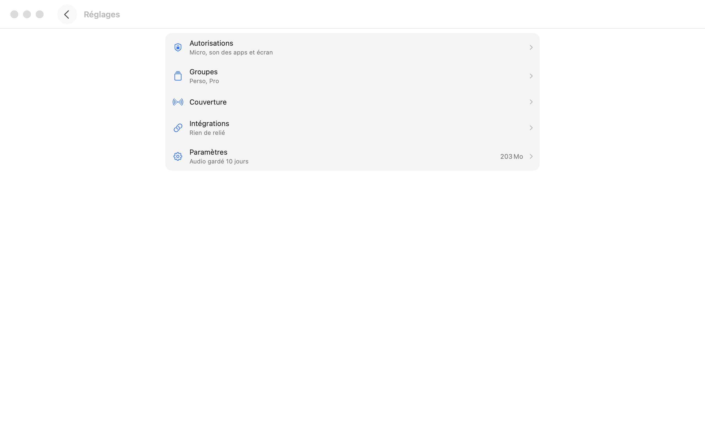
Après
Réglages
Autorisations
Micro, son des apps et écran
›
Groupes
Perso, Pro
›
Intégrations
Rien de relié
›
Général
Audio gardé 10 jours
203 Mo ›
25
Une page, trois noms : « Base de données externe », « Copies », « Autres outils »
GêneMinutesSens
Où
autres-outils.webp · Wizard.swift:81, Onboarding.swift:362, :494-531 ; légende des captures « Autres outils »
Vu
L'entrée et le titre disent « Base de données externe » ; la page n'a qu'une section, « Copies », et un bouton « Ajouter une copie… » ; le texte parle de dossier, de Google Drive, d'iCloud Drive.
Pourquoi
Personne ne pense à un dossier Google Drive comme à une « base de données ». Le mot du titre ne se retrouve pas dans la page : on doute d'être au bon endroit. « Un mot, un sens » (TEXTES.md).
Proposition
Titre et entrée : « Copies dans un dossier » ; section supprimée (le titre la dit) ; état vide « Aucune copie » + « Ajouter une copie… ». Le résumé de l'entrée dit où : « Google Drive ».
« Autres outils » est devenu « Base de données externe » exprès dans 6a58bcc (2 novembre), sans raison écrite. La proposition ne revient pas à « Autres outils ».
Avant
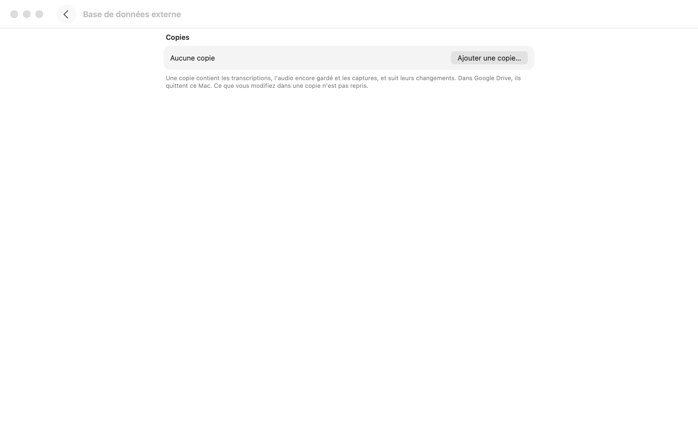
Après
‹Copies dans un dossier
Aucune copieAjouter une copie…
Dans Google Drive ou iCloud Drive, les copies quittent ce Mac. Ce qui y est modifié n'est pas repris.
26
Groupes : « Accessible à Claude », alors que l'interrupteur vaut pour toutes les IA
À droite de chaque groupe, « Accessible à Claude » et un interrupteur. Coupé, il garde le groupe hors de la relecture et des agents et des copies (l'infobulle le dit). Ailleurs, l'app dit « gardée hors des IA ».
Pourquoi
« Agents : jamais Claude comme chapeau » (TEXTES.md, vocabulaire). Quelqu'un qui utilise Codex croira ses groupes protégés de Claude seulement. Le bon mot existe déjà dans l'app.
Proposition
« Lu par les IA », interrupteur inchangé. Coupé, le compteur du groupe peut porter le même symbole que les autres endroits « hors des IA ».
Avant
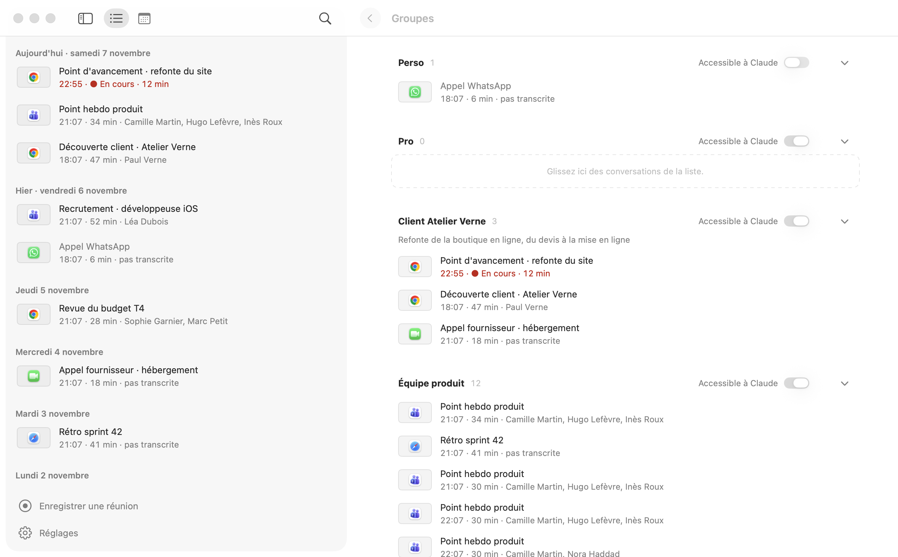
Après
Perso 1Lu par les IA⌄
27
Agents : un bouton et un interrupteur sur la même ligne, trois lignes d'aide
« Accès des agents à vos conversations » porte « Relier Claude Desktop » et un interrupteur. Le texte dessous mêle quatre choses : qui est relié, ce qu'ils peuvent faire, où partent les données, et que Claude Desktop sera relancé. Plus bas, « Copier la configuration MCP » (mot du code) et un chemin /tmp/… dans la consigne.
Pourquoi
Deux contrôles sur une ligne obligent à deviner lequel fait quoi : l'interrupteur coupe-t-il Claude Desktop seulement ? Une liste de qui est relié, en prose, cache l'état de chacun. Réglages Système montre ce cas en liste : une ligne par élément, son état à droite.
Proposition
L'interrupteur seul sur sa ligne, avec une phrase de conséquence : « Ce qu'ils lisent part chez leur fournisseur. » En dessous, une ligne par agent trouvé sur ce Mac : « Claude Code — Relié », « Claude Desktop — Relier » (relance dite dans l'alerte qui suit, pas d'avance), « Codex — Relier ». « Copier la configuration MCP » devient « Copier la configuration » : l'agent sait ce que c'est.
Avant
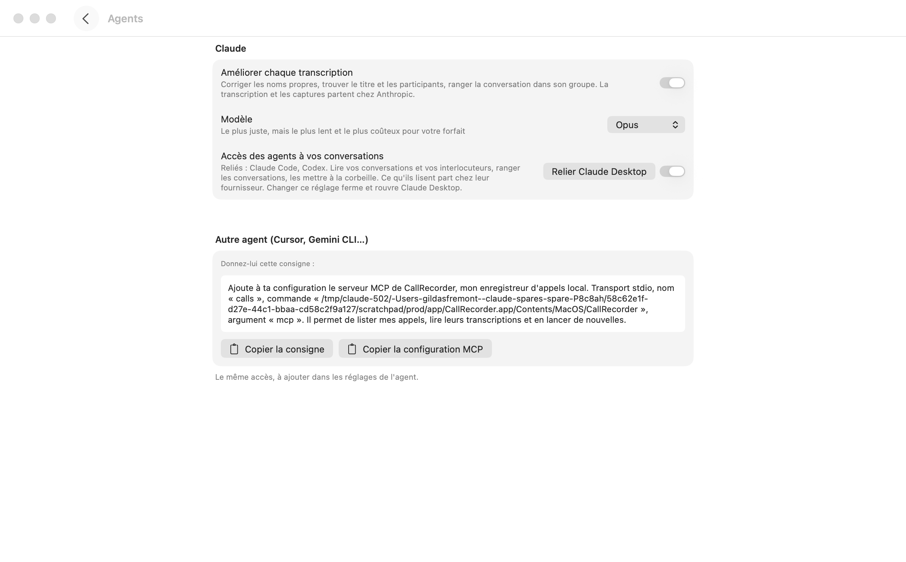
Après
Accès des agents à vos conversations
Ce qu'ils lisent part chez leur fournisseur.
Claude Code✓ Relié
Claude DesktopRelier
Codex✓ Relié
28
Autorisations › Écran : l'instruction et le bouton ne disent pas le même geste
« Dans Réglages Système, activez CallRecorder, puis « Quitter et rouvrir » » à gauche ; bouton « Relancer Callrecorder » à droite. Le même nom écrit de deux façons sur une ligne. Micro et Son ont « ✓ Autorisé » ; Écran n'a pas d'état.
Pourquoi
On lit deux procédures : celle de macOS (« Quitter et rouvrir ») et celle de l'app (« Relancer »). Lequel faire, et dans quel ordre ? « CallRecorder » est légitime s'il cite la liste de Réglages Système, mais alors entre guillemets.
Proposition
Détail : « Activez « CallRecorder » dans Réglages Système. » Un seul bouton à droite, qui suit l'état : « Ouvrir Réglages Système » tant que ce n'est pas fait, puis « Relancer Callrecorder ». Le bouton de macOS n'est plus cité : il fait la même chose.
Avant
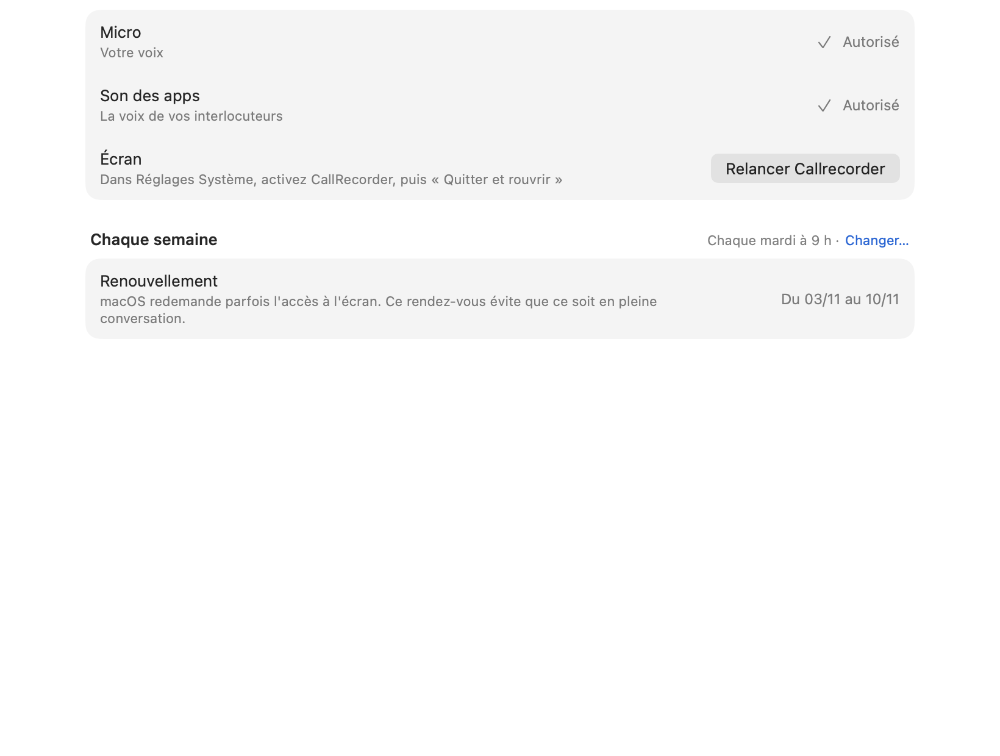
Après
Micro
Votre voix
✓ Autorisé
Écran
Activez « CallRecorder » dans Réglages Système.
Relancer Callrecorder
29
« Chaque semaine … Changer… » : un lien dans un titre, des dates en chiffres
Titre de section « Chaque semaine », et à sa droite « Chaque mardi à 9 h · Changer… » en bleu. La ligne « Renouvellement » finit par « Du 03/11 au 10/11 ».
Pourquoi
Un lien bleu dans un en-tête de groupe est un geste du web ; Réglages Système met le réglage dans la ligne, sous forme de menu local. Partout ailleurs l'app écrit les dates en toutes lettres (« samedi 7 novembre »).
Proposition
Section « Renouvellement chaque semaine », une ligne « Moment » avec un menu local « Mardi à 9 h ». La ligne d'état dit « Fait mardi 3 novembre · prochain mardi 10 ».
AvantAprès
Renouvellement chaque semaine
Moment
Mardi à 9 h
Dernier
macOS redemande parfois l'accès à l'écran : mieux vaut ce rendez-vous qu'un appel.
mardi 3 novembre
30
Rien d'autorisé : le bandeau et la ligne disent la même chose
Bandeau : « Pour enregistrer vos conversations, autorisez le micro et le son des apps. » [Autoriser]. Juste dessous, la ligne Autorisations : « À autoriser : le micro et le son des apps ». L'icône d'alerte est grise, comme une icône décorative.
Pourquoi
Même fait deux fois dans la vue. « À autoriser : … » est la forme « État : explication » que TEXTES.md écarte. Une alerte grise ne se distingue pas d'une illustration ; Réglages Système met un point orange ou rouge.
Proposition
Bandeau gardé, icône en Palette.warning. La ligne Autorisations reprend son résumé ordinaire et prend un point Palette.warning à droite, devant le chevron, comme une pastille de Réglages Système.
Avant
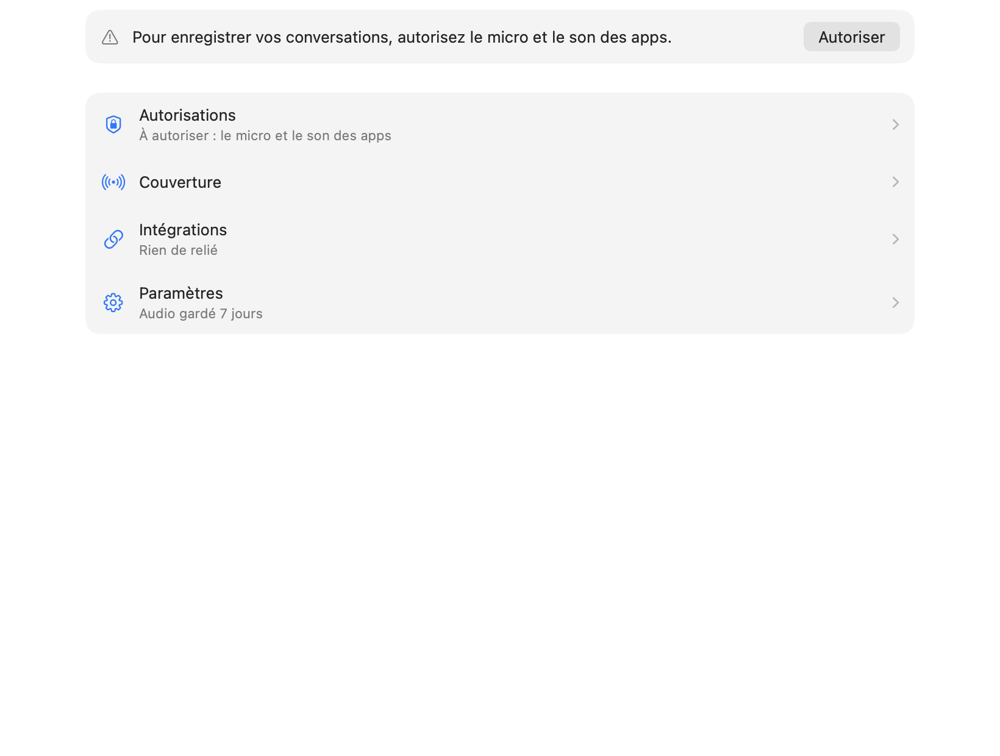
Après
⚠︎ Pour enregistrer vos conversations, autorisez le micro et le son des apps.Autoriser
Autorisations
Micro, son des apps et écran
›
31
Téléphones : les réglages d'un téléphone avant son nom
Sous « Téléphones reliés » : quatre réglages, puis, en dernier, « Google Pixel 7 · Vu aujourd'hui à 22:29. » [Retirer]. À quoi s'appliquent les réglages s'il y a deux téléphones ? Plus bas, « Android : Aucun téléphone branché · Branchez votre Pixel en USB » alors qu'un Pixel est relié (par le Wi-Fi). « Ajouter un téléphone » [Ajouter…] répète le verbe. Les coches bleues de « Ce qui est enregistré sur Android » ont l'air de cases à cocher.
Pourquoi
Réglages Système › Bluetooth montre l'appareil d'abord, ses réglages ensuite (bouton ⓘ). « Aucun téléphone branché » à côté d'un téléphone relié se lit comme une contradiction. Une coche bleue dans un groupe de réglages est un contrôle sur le Mac ; si on ne peut pas la décocher, ce n'en est pas un.
Proposition
Une carte par téléphone : en tête son nom, son état (« Relié par le Wi-Fi · vu à 22:29 ») et un ⋯ (Retirer), puis ses réglages. Un seul bouton « Ajouter un téléphone… » sous la liste, comme « Ajouter… » de Bluetooth. La ligne USB ne parle que de l'USB : « Aucun téléphone branché en USB ». Coches remplacées par le texte « Enregistré ».
Avant
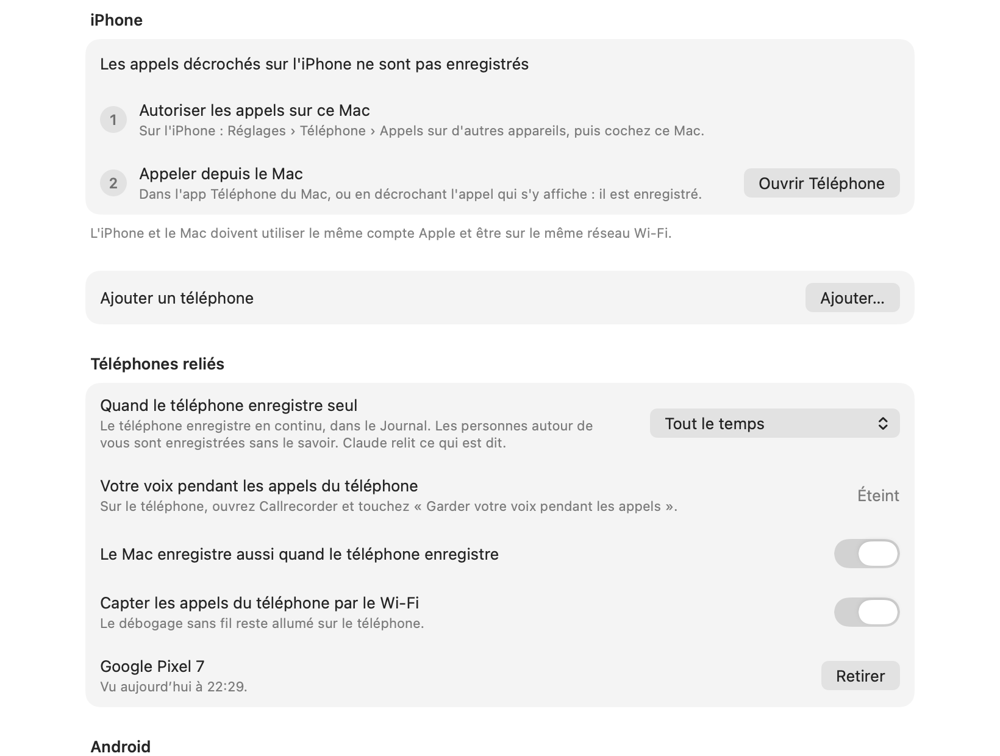
Après
Google Pixel 7
Relié par le Wi-Fi · vu à 22:29
⋯
Quand il enregistre seul
Tout le temps
Le Mac enregistre aussi
Capter ses appels par le Wi-Fi
Le débogage sans fil reste allumé sur le téléphone.
Ajouter un téléphone…
« Quand le téléphone enregistre seul » vient de 358bc24 (4 novembre) ; les positions du menu ont été tranchées par Gildas le 6 novembre (TEXTES.md, vocabulaire). La proposition garde les positions et le mot « Enregistrement » ; elle ne raccourcit le titre que parce que le téléphone est nommé en tête de carte.
32
Réglages pleine fenêtre, Groupes à droite : deux façons d'entrer et de sortir
⌘, remplace toute la fenêtre par une liste centrée avec un retour ‹ ; Groupes, ouvert depuis cette liste, revient à la disposition à deux colonnes, avec son propre ‹. On descend sur deux niveaux (Réglages › Intégrations › Agents) par une liste et des chevrons, à la façon d'un iPhone.
Pourquoi
Réglages Système (depuis macOS 13) et les réglages des apps d'Apple montrent les rubriques dans une barre latérale, et la page à droite : on voit où l'on est, on change de rubrique d'un clic, sans retour. La fenêtre a déjà une barre latérale ; elle disparaît au moment où elle servirait.
Proposition
Garder les Réglages dans la fenêtre, comme décidé, mais à la façon de Réglages Système : la colonne de gauche liste les rubriques (Autorisations, Groupes, Couverture, Intégrations, Général) pendant que ⌘, est ouvert ; la page à droite ; Échap ramène aux conversations. Groupes devient une rubrique comme les autres.
Les Réglages dans la fenêtre, sans fenêtre à part, sont un choix de 9c489e0 (27 octobre). La proposition le garde ; elle change seulement ce que montre la colonne pendant qu'ils sont ouverts.
AvantAprès
Autorisations
Groupes
Couverture
Intégrations
Général
Intégrations
Agents›
Copies dans un dossier›
VoiceOver
33
VoiceOver : l'icône dit « Au repos », la pastille ne dit rien
L'icône de la barre des menus a pour description « Au repos » ou « Enregistrement » : VoiceOver annonce « Au repos, bouton », sans le nom de l'app. Le point rouge et le chrono de la pastille ne sont pas des éléments accessibles nommés ; le panneau n'a pas de titre. La ligne de liste combine ses enfants et met appLabel en indication : le nom de l'app arrive en dernier, après une pause.
Pourquoi
Avec VoiceOver, on parcourt la barre des menus par le nom des apps : « Au repos » ne se retrouve pas. Pendant un appel, savoir qu'on est enregistré est la seule information de la pastille, et elle est muette. C'est aussi une question de consentement : la personne doit pouvoir vérifier.
Proposition
Icône : « Callrecorder » au repos, « Callrecorder, enregistrement de Teams, 12 minutes » pendant. Pastille : un élément « Enregistrement de Teams, 12 minutes » (valeur mise à jour chaque minute, pas chaque seconde), puis ses deux boutons. Ligne : le nom de l'app passe du hint au libellé, après le titre.
Avant
▸ Au repos, bouton
▸ (pastille) Capturer l'appel, bouton
▸ Arrêter l'enregistrement, bouton
Après
▸ Callrecorder, enregistrement de Teams, 12 minutes, bouton
33 recommandations. Rien n'a été changé dans le code. Les captures sont celles de la 0.24.0 publiée ; les numéros de ligne, ceux de la branche recos-design au 8 novembre 2026.